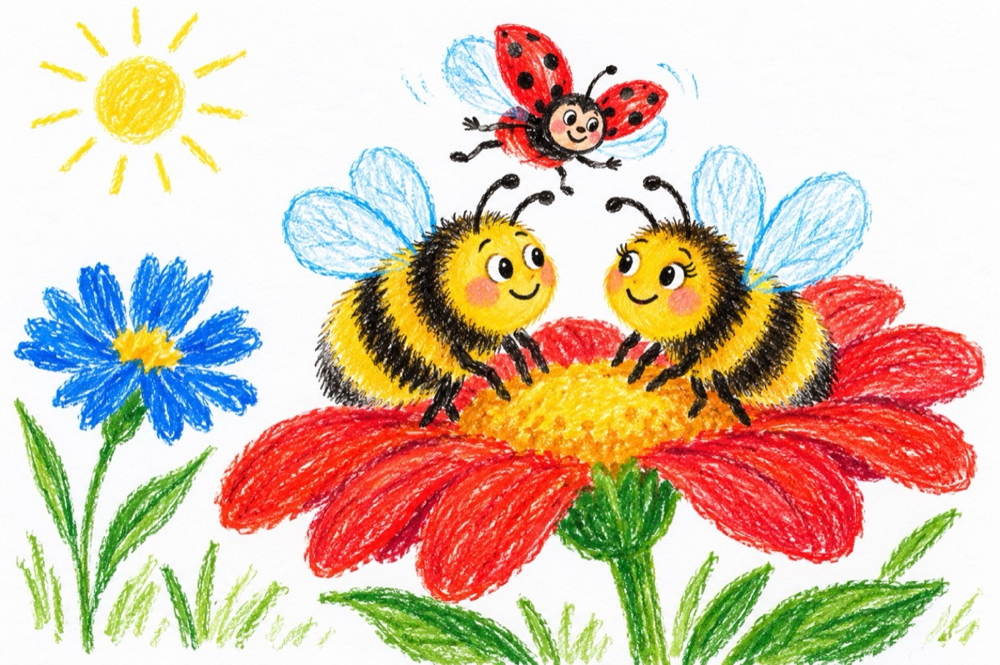

Bondarul și gărgărița
Vrând de-acuma să se-nsoare,
Bondarul fermecător,
Bâzâia din floare-n floare,
Fără nici un pețitor!
S-a dus la câteva babe -
Bondărițe cu renume
Spunând că e cumsecade,
Să-l ajute, să-l îndrume!
Să-i dea în cărți, în ghioc,
Să-i descopere ursita,
Să-i spună de-are noroc
Și care i-o fi iubita?!
Negăsind nici un răspuns,
La atâtea bondărițe,
Un plan mare și-a propus -
Să meargă la gărgărițe!
Gărgăriță, gărgărea,
Zboară unde tu ai vrea,
Spre miazăzi, de-ai putea
Acolo m-oi însura!
Ruță, Ruță, Mămăruță,
Frumușică și drăguță,
Caută-mi aleasa mea
Și cu ea m-oi însura!
Buburuză, buburuză,
Poți să zbori din frunză-n frunză
Și-n deșert de vei zbura,
Pe tine te-oi asculta!
Și-a zburat, în sus, pe-o floare
La mireasa Bondărița,
Ajutându-l să se-nsoare,
PEȚITOAREA GĂRGĂRIȚA!
Vasile Groza